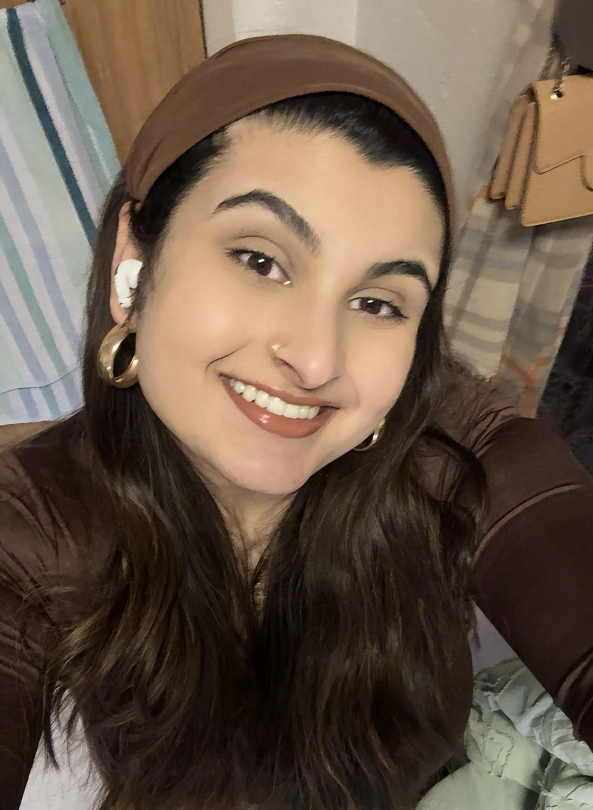

Hello my name is Farreen. I am a Junior at University of Massachusetts Amherst majoring in Operations Information Management. As well as a BDIC degree with an individual concentration in User Experience and Design. I have always been both a technical and creative individual and have found UI/UX to be the perfect mix of both.
My interest in UI/UX design has led me to pursue a more out of the box option regarding my degree. During my first year of college I searched for a way to incorporate my love for art into my career choice and came upon UI/UX. However UMass did not have a major for this which led me to take initiave and utilize resources to create a major of my own.
At my time at UMass I have developed both my technical and creative skills. I have developed a strong understanding of balancing user needs with a strategic business objective. My interdisciplinary backgound in Operations Information Management and my customized UI/UX design concentration has equipped me with expertise in data analysis, problem solving, user research, and design. Giving me the insight I need to analyze user data to improve business processes.
Please feel free to contact me at:farreenqadus22@gmail.com
Check me out on Linkedin Here
